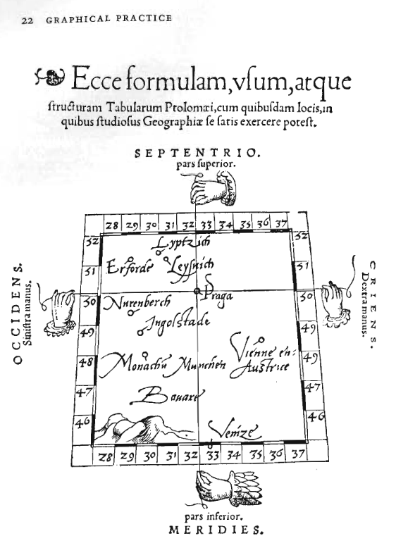

library(dplyr)
library(jsonlite)
library(tidyr)
library(vegawidget)
library(vegabrite)Homework 6
Libraries
Exercise 1
a. What is the most interesting lesson, guide, or piece of advice Tufte offers you in this chapter?
- A silly theory means a silly graphic.
- Graphical exelence the effcient communication of complex quantiatvie ideas.
b. Tufte shares some of his favorite graphics in this chapter. Pick one (but not the one about the military advance on and retreat from Russia) and answer the following.
What page is your graphic on? [Take a screen shot and include the image as well, if you can.]

Why did you pick the graphic you chose?
In all honesty, the graphic looks like a Monopoly board, and the hands make it look interesting. Also, I find the Latin appealing because I can somewhat read or guess what it’s saying for the simple reason that I know Spanish.
What encoding channels are used in the graphic? What variables are they associated with?
Text: The text helps us identify the cities, as well as the longitude and latitude. It also assists with the orientation of the map.
Position: The position here is defined by the strings and the pins and we have a position based on the long and lat.
Drawings: It has the string indicating the position of Prague. The mountain could be showing the terrain of the location.
What, if any, elements of the graphic would be hard/impossible for you to implement in Vega-Lite (given what we know so far)?
think the positioning of the images (mountains, hands, and strings) would be extremely hard to achieve because of their positioning
What point is Tufte illustrating with this graphic?
The map’s design is outdated, as it still uses the name of the city being located. In contrast, the newer maps have a greater level of abstraction, using coordinates instead of names.
Exercise 2
List one or two ideas that you learned in these sections that will change the way you design and create data graphics.
- There are not a lot of hard and fast rules when it comes to visualizing dat.
- When you consider getting rid of data, you always want to think through what context you lose when do so.
Exercise 3
Do Exercies 2.13 of (Knaflic 2020, p 96).
Exercise 2.13: what’s wrong with this graph?
Consider Figure 2.13, which shows response and completion rates for an email marketing campaign where email recipients were asked to complete a survey.
STEP 1: List three things that are not ideal about this graph. What makes it challenging?
- Both marks should be the same to make comparison easier.
- Eliminate the the axis numbers or the numebrs on the marks.
- The scales of the axis are visually deceiving.
STEP 2: For each of the three things you’ve listed, describe how you would overcome the given challenge.
- I would make both marks bars to make comparison easier by eye.
- I would eliminate the numbers on top of the graphs and the numbers on the axis to reduce clutter.
- Standardize the numbers to have relatively good scales. So that its not deceiving.
STEP 3: Download the data. Create your visual that puts into practice the strategies you’ve outlined
chr "Date" chr "Completion" chr "Response"'data.frame': 9 obs. of 3 variables:
$ Date : chr "Q1-2017" "Q2-2017" "Q3-2017" "Q42017" ...
$ Completion Rate: num 0.91 0.93 0.91 0.89 0.84 0.88 0.91 0.87 0.83
$ Response Rate : num 0.023 0.018 0.028 0.023 0.034 0.027 0.026 0.039 0.028I want a column for each variable so that I can easily compare the values. The graph above seems to be combining both Completion Rate and Reply into a single variable. To fix this, I will pivot the data frame to a long format, which will provide the three columns I need and help me construct the graph more easily.
# Pivot the data
email_rate_data_long <- email_rate_data %>%
pivot_longer(
cols = c(`Completion Rate`, `Response Rate`),
names_to = "Rate Type",
values_to = "Rate Value"
)
# Converting Completion Rate and Response Rate to percentages
email_rate_data_long <- email_rate_data_long %>%
mutate(
`Rate Value` = `Rate Value` * 100 # Convert rates to percentages
)
# Constructing the Vega-Lite specification
my_spec <- list(
`$schema` = "https://vega.github.io/schema/vega-lite/v5.json",
data = list(values = email_rate_data_long), # Using long data
mark = list( type = "bar", width = 45),
height = 450,
width = 600,
encoding = list(
x = list(field = "Date", type = "ordinal", title = "Date"),
y = list(
field = "Rate Value",
type = "quantitative",
title = "Rate Value (%)",
scale = list(domain = c(0, 100), step = 5) # Set y-axis to have steps of 5
),
color = list(field = "Rate Type", type = "nominal", title = "Rate Type")
)
)
# Graphic
my_spec |> as_vegaspec()
Comments:
Making the graphs was harder than it seemed, partly due to the data wrangling. Furthermore, I decided to use a stacked bar graph to show proportions, as it makes it easier to compare and observe the true values. I also added a legend to help the reader easily identify the two different rates